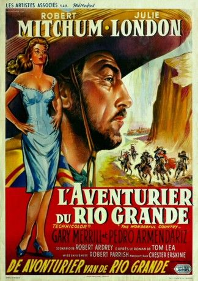

#3211 Heiße Grenze
Alternativ: The Wonderful Country
 
 IMDB-Wertung: 6.2 / 10
IMDB-Wertung: 6.2 / 10  Metascore: 0
Metascore: 0 
Wegen eines Racheakts musste Brady vor Jahren nach Mexiko fliehen. Er schleßt sich dort einem Politiker an, der einen guten Schützen sucht. Eines Tages taucht er in Texas auf, um illegale Waffen zu holen, stürzt dort und bricht sich ein Bein. Die Ehefrau eines US-Majors interessiert sich stark für ihn, aber auch ein Captain der Texas Rangers, er möchte, dass Brady Texas Ranger wird.
Jahr: 1959
Dauer: 93 Minuten
FSK: 12
Land: USA Studio: United ArtistsTonspuren: DD2.0 - ,
Untertitel:
Auflösung: 1080p (1440x864) Größe: 5191 MB
Genre: Western, Liebe
Regisseur: Robert Parrish
Drehbuch: Robert Ardrey, Tom Lea, Walter Bernstein
Soundtrack: Alex North
Darsteller:
 Robert Mitchum als Martin Brady
Robert Mitchum als Martin Brady- Julie London als Helen Colton
 Gary Merrill als Maj. Stark Colton
Gary Merrill als Maj. Stark Colton- Albert Dekker als Texas Ranger Capt. Rucker
- Jack Oakie als Travis Hyte
 Charles McGraw als Dr. Herbert J. Stovall
Charles McGraw als Dr. Herbert J. Stovall- Anthony Caruso als Santiago Santos
 Mike Kellin als Pancho Gil
Mike Kellin als Pancho Gil- John Banner als Ben Sterner
- Pedro Armendáriz als Cipriano Castro
- Leroy 'Satchel' Paige als Sgt. Tobe Sutton
- Víctor Manuel Mendoza als Gen. Marcos Castro
- Jay Novello als Diego Casas
- Max Slaten als Ludwig 'Chico' Sterner
- Margarito Luna als
- Joe Haworth als Stoker
- Tom Lea als Mr. Peebles, the barber
 Chuck Roberson als Barton
Chuck Roberson als Barton Claudio Brook als Ruelle , uncredited
Claudio Brook als Ruelle , uncredited Chester Hayes als Rascon , uncredited
Chester Hayes als Rascon , uncredited- Victoria Horne als Townswoman at Dance , uncredited
- Mike Luna als Capt. Verdugo , uncredited
- Alberto Mariscal als (uncredited
- Judith Marsh als Entertainer at fiesta , uncredited
- James Edgar McCullah als Indian on horse , uncredited
- Hernando Name als (uncredited
Datei: X:\HD-Western-1900-1959\Heiße Grenze (1959, FSK12, 1440x864).mkv seit 19.02.2016
Festplatte: HD Eastern+Western
 Es gibt insgesamt 98 Filme in der Gruppe 'HD-Western-1900-1959'
Es gibt insgesamt 98 Filme in der Gruppe 'HD-Western-1900-1959'